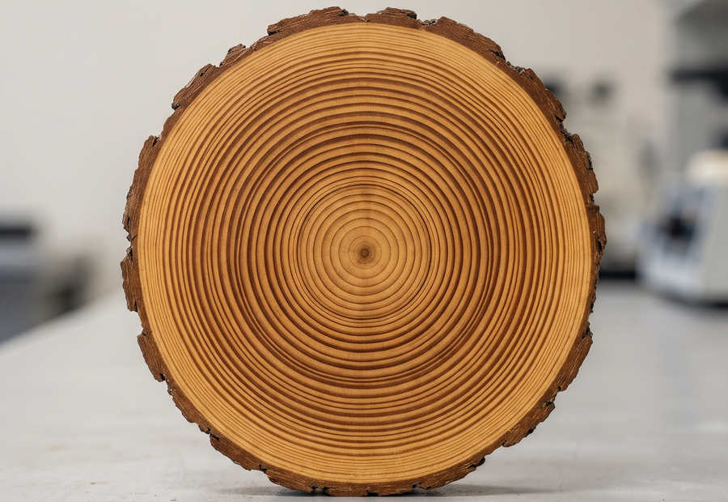

The Ring Record. A git metadata analyzer that reads the record a repository has written into itself, its authors, its commit messages, and its branch names, and scores the entries that break its patterns.
python3 main.py REPO_PATH [--email_threshold 0.9] [--commit_message_pattern PATTERN] [--branch_name_pattern PATTERN] [--output_file analysis_report.txt] [--offensive_tools]
The README usage line is a placeholder naming an executable the repo does not ship; the real invocation is the one above. The default message pattern expects a capitalised type word and a colon at the head of the subject. The default branch pattern accepts only feature, bugfix, hotfix, or release prefixes in lowercase, under which a lone main branch is itself an invalid name.
| Option | What it does |
|---|---|
repo_path | The repository to read. Required. The README parameter list omits it; the code requires it. |
--email_threshold | Default 0.9. The README list gives this No description provided; the help text in main.py gives the default. |
--commit_message_pattern | The subject line pattern, default ^[A-Z][a-z]+: followed by text. |
--branch_name_pattern | The local branch name pattern, with feature, bugfix, hotfix, and release prefixes by default. |
--output_file | Where the report goes. Default analysis_report.txt. |
--offensive_tools | Adds a run of bandit, flake8, pylint, and pyre over the tree; each tool that produces output adds 0.4 to the score. |
Python, plus the four external analyzers listed in the requirements file (bandit, flake8, pylint, and pyre-check, each 1.0.0 or later), which the code invokes only when --offensive_tools is passed.